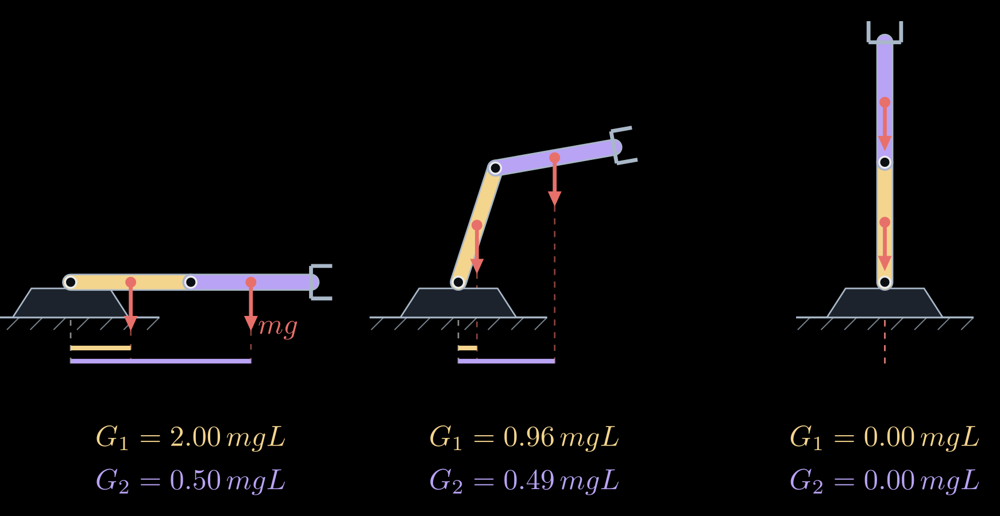
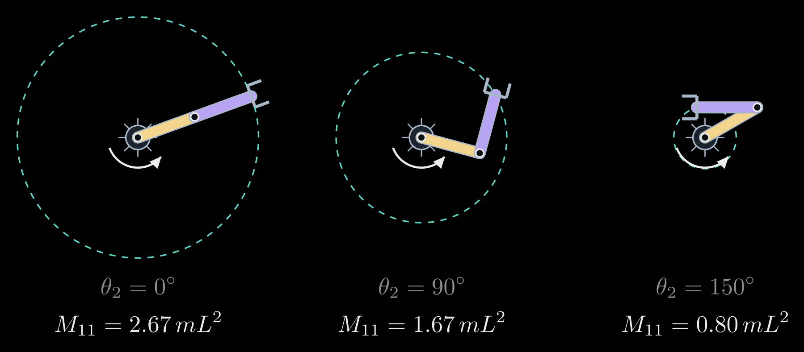
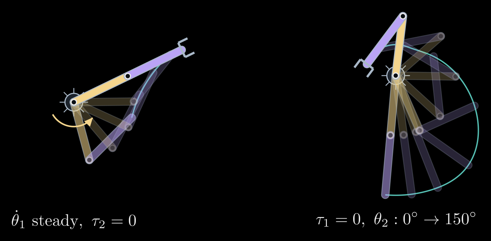
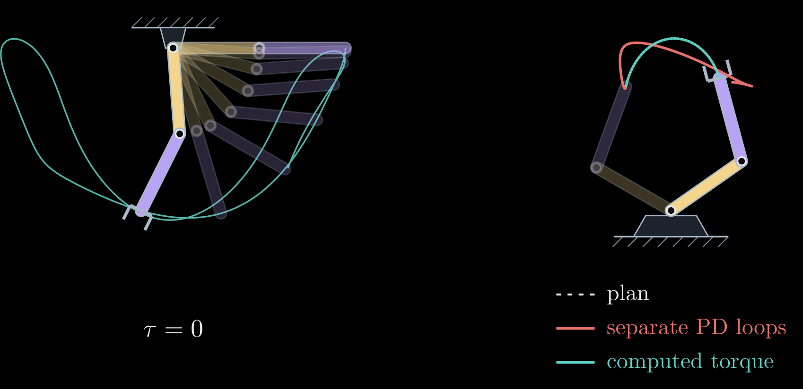

Robot Arm Dynamics
Kinematics describes how a robot arm moves, but not what makes it move. A motor does not set its joint's angle or speed directly: it applies a torque, and the arm answers according to the masses of its links, its shape and gravity. Dynamics is the relation between the torques and the motion, and for an arm with \(n\) joints it always takes the same form:
\[M(\theta)\, \ddot{\theta} + C(\theta, \dot{\theta})\, \dot{\theta} + G(\theta) = \tau\]
Here \(\theta\) is the vector of the \(n\) joint angles, \(\dot\theta\) and \(\ddot\theta\) are its first and second derivatives with respect to time (the joint speeds and accelerations), and \(\tau\) is the vector of torques that the motors apply at the joints. The left side splits that torque by what it pays for. \(M(\theta)\ddot\theta\) accelerates the links: the \(n \times n\) mass matrix \(M(\theta)\) plays the part that mass plays in \(F = ma\), except that it changes with the arm's posture. \(C(\theta, \dot\theta)\dot\theta\) collects the centrifugal and Coriolis torques that appear when the joints move, and \(G(\theta)\) holds the arm up against its own weight. Read from left to right, the equation gives the torques that produce a desired motion (inverse dynamics, used to control an arm); solved for \(\ddot\theta\), it gives the motion that given torques produce (forward dynamics, used to simulate one).
This is the fifth of five notes on robot arms, after 3D Rotations: Matrices, Euler Angles and Quaternions, Forward Kinematics, Inverse Kinematics and The Manipulator Jacobian.
The two-link arm, standing up
All examples use the two-link arm of the earlier notes, now moving in a vertical plane so that gravity matters, with \(y\) pointing up. The shoulder angle \(\theta_1\) is measured from the horizontal and the elbow angle \(\theta_2\) from the line of the upper arm; \(L_1\) and \(L_2\) are the link lengths. Link \(i\) has the mass \(m_i\), its center of mass lies on the link at the distance \(r_i\) from joint \(i\), and \(I_i\) is its moment of inertia about that center, which measures how hard the link alone is to spin about its own middle. For a uniform rod, \(r_i = L_i / 2\) and \(I_i = m_i L_i^2 / 12\). Finally, \(g \approx 9.81\ \mathrm{m/s^2}\) is the acceleration of gravity.
Gravity: holding still
When the arm is at rest, \(\dot\theta = \ddot\theta = 0\) and the equation reduces to \(\tau = G(\theta)\): the motors hold up the weight of the links. Each link's weight \(m_i g\) pulls straight down at its center of mass, and by the transpose rule of The Manipulator Jacobian each joint has to supply that force times its lever arm, which for a vertical force is the horizontal distance from the joint to the center. For the two-link arm,
\[G(\theta) = \begin{bmatrix} (m_1 r_1 + m_2 L_1)\, g \cos\theta_1 + m_2 r_2\, g \cos(\theta_1 + \theta_2) \\ m_2 r_2\, g \cos(\theta_1 + \theta_2) \end{bmatrix}\]
The cosines are the lever arms: \(r_1 \cos\theta_1\) is the horizontal distance from the shoulder to the upper arm's center, and \(L_1 \cos\theta_1 + r_2 \cos(\theta_1 + \theta_2)\) the distance to the forearm's. The shoulder carries the weight of everything beyond it, the elbow only that of the forearm. Both torques are largest with the arm stretched out horizontally, and they vanish when the links stand straight up or hang straight down, where every weight acts along a line through the joints (Figure 1). For two equal uniform links of mass \(m\) and length \(L\), the horizontal arm needs \(2mgL\) at the shoulder, four times the \(\tfrac{1}{2} mgL\) at the elbow.
The same vector is the gradient of the arm's potential energy, \(G(\theta) = \partial P / \partial \theta\), where \(P(\theta) = \sum_i m_i g\, y_i\) and \(y_i\) is the height of the center of link \(i\): a motor that turns its joint against \(G\) lifts the arm, and the work it does is stored as potential energy.
This is why arms carry their heavy motors near the base and keep the links toward the hand light: every kilogram at the hand costs torque at every joint before it, on a long lever. Many arms also cancel most of \(G\) with springs or counterweights, so that the motors only pay for motion.

Figure 1. Gravity torques of a two-link arm with equal uniform links, in three postures. Each link's weight (red) acts at its center of mass. Its torque about the shoulder is the weight times the horizontal distance from the shoulder, shown by the bars below each arm (gold for the upper arm, lavender for the forearm). Raising the elbow shortens both distances; standing straight up, the arm needs no torque at all, though the slightest push would tip it over.
Inertia: the mass matrix
To accelerate the arm, the motors have to change its kinetic energy. For any arm, the kinetic energy is a quadratic form in the joint speeds,
\[K = \tfrac{1}{2}\, \dot{\theta}^{\mathsf T} M(\theta)\, \dot{\theta}\]
and this defines the mass matrix. It follows from the Jacobians of the individual links. The center of mass of link \(i\) moves with the velocity \(v_i = J_{v_i}(\theta)\, \dot\theta\) and the link turns with the angular velocity \(\omega_i = J_{\omega_i}(\theta)\, \dot\theta\), where \(J_{v_i}\) is the Jacobian of that center, built like the hand's Jacobian but ending at the center instead of the hand, and \(J_{\omega_i}\) is the Jacobian of the link's rotation. Adding up each link's kinetic energy of motion, \(\tfrac{1}{2} m_i |v_i|^2\), and of rotation, \(\tfrac{1}{2} I_i \omega_i^2\), gives
\[M(\theta) = \sum_i \left( m_i\, J_{v_i}^{\mathsf T} J_{v_i} + I_i\, J_{\omega_i}^{\mathsf T} J_{\omega_i} \right)\]
In space, \(I_i\) becomes the link's \(3 \times 3\) inertia matrix, turned into world coordinates. For the two-link arm, \(J_{\omega_1} = [\,1 \ \ 0\,]\) and \(J_{\omega_2} = [\,1 \ \ 1\,]\), since the forearm turns with both joints, and the sum works out to
\[M(\theta) = \begin{bmatrix} I_1 + I_2 + m_1 r_1^2 + m_2 (L_1^2 + r_2^2 + 2 L_1 r_2 \cos\theta_2) & I_2 + m_2 (r_2^2 + L_1 r_2 \cos\theta_2) \\ I_2 + m_2 (r_2^2 + L_1 r_2 \cos\theta_2) & I_2 + m_2 r_2^2 \end{bmatrix}\]
Each entry has a meaning.
- \(M_{11}\), in row 1 and column 1, is the inertia the shoulder motor feels when it turns the whole arm with the elbow held still. It depends on \(\theta_2\), because inertia grows with the square of the distance from the axis: the stretched arm is the hardest to swing and the folded arm the easiest. For two equal uniform links it is \(\tfrac{8}{3} mL^2\) stretched and \(\tfrac{2}{3} mL^2\) folded, four times less (Figure 2). A figure skater spins faster after pulling in the arms for the same reason.
- \(M_{22}\) is the inertia the elbow motor feels, the forearm turning about the elbow. It does not depend on the posture.
- \(M_{12} = M_{21}\) couples the joints: accelerating one joint takes torque at the other as well. When the shoulder motor speeds the arm up, the forearm tends to lag behind, and the elbow motor has to push to keep its angle. A controller that runs each joint on its own sees this coupling as a disturbance.
\(M(\theta)\) is symmetric and positive definite, because the kinetic energy is positive for every motion. It can therefore always be inverted, and forward dynamics always has exactly one answer.

Figure 2. The shoulder's inertia \(M_{11}\) at three elbow angles, for equal uniform links (in units of \(mL^2\)). The dashed circle is the path of the hand when the shoulder turns with the elbow held still: the farther the mass sits from the shoulder, the more torque the same angular acceleration takes.
Velocity torques: centrifugal and Coriolis
When the joints move, the arm's shape changes, and with it \(M(\theta)\). The torques this produces are quadratic in the joint speeds. For the two-link arm, writing \(h = m_2 L_1 r_2 \sin\theta_2\),
\[C(\theta, \dot{\theta})\, \dot{\theta} = \begin{bmatrix} -h\, (2 \dot\theta_1 \dot\theta_2 + \dot\theta_2^2) \\ h\, \dot\theta_1^2 \end{bmatrix}\]
- The terms with a squared speed are centrifugal. When the shoulder turns at the speed \(\dot\theta_1\), the forearm is flung outward and the arm tends to straighten, so the elbow motor has to supply \(h \dot\theta_1^2\) to keep its angle (Figure 3, left). In the same way the forearm swinging about the elbow pulls on the shoulder, the term \(-h \dot\theta_2^2\).
- The product term \(-2h \dot\theta_1 \dot\theta_2\) is the Coriolis torque. When the elbow folds while the shoulder turns, the arm's mass moves toward the shoulder and the arm speeds up, like the skater pulling in the arms. To keep the shoulder speed steady, the shoulder motor has to brake; with that motor off, the spin speeds up instead (Figure 3, right).
Both kinds grow with the square of the speed: doubling the speed of a motion quadruples them. They hardly matter for slow motions and matter a great deal for fast ones.

Figure 3. Velocity torques in a simulation of the arm lying flat on a table, so that gravity plays no part (equal uniform links). Left: the shoulder motor turns at a steady speed while the elbow motor is off; the forearm swings outward until the arm is straight. Right: the shoulder motor is off and the arm spins; the elbow motor folds the forearm in, and the snapshots, taken every 0.2 s, spread apart as the spin speeds up from 1.1 to 3.7 radians per second. The shoulder's angular momentum \(M_{11} \dot\theta_1 + M_{12} \dot\theta_2\) stays constant, so the speed grows by the same factor, 3.3, by which \(M_{11}\) shrinks.
Where the equation comes from
The whole equation follows from two scalar functions, the kinetic energy \(K\) and the potential energy \(P\), through Lagrange's equations. With the Lagrangian \(\mathcal{L} = K - P\),
\[\frac{d}{dt} \frac{\partial \mathcal{L}}{\partial \dot\theta_i} - \frac{\partial \mathcal{L}}{\partial \theta_i} = \tau_i, \qquad i = 1, \dots, n\]
Substituting \(K = \tfrac{1}{2} \dot\theta^{\mathsf T} M \dot\theta\) gives \(M \ddot\theta + \dot M \dot\theta - \tfrac{1}{2}\, \partial (\dot\theta^{\mathsf T} M \dot\theta) / \partial \theta + G = \tau\), where \(\dot M\) is the rate of change of \(M\) along the motion, and the two middle terms make up \(C(\theta, \dot\theta)\, \dot\theta\). Written out entry by entry,
\[\big( C(\theta, \dot\theta)\, \dot\theta \big)_i = \sum_{j, k} c_{ijk}\, \dot\theta_j \dot\theta_k, \qquad c_{ijk} = \frac{1}{2} \left( \frac{\partial M_{ij}}{\partial \theta_k} + \frac{\partial M_{ik}}{\partial \theta_j} - \frac{\partial M_{jk}}{\partial \theta_i} \right)\]
where \(M_{ij}\) is the entry of \(M\) in row \(i\) and column \(j\), and the coefficients \(c_{ijk}\) are called Christoffel symbols. So \(M(\theta)\) and \(P(\theta)\) fix everything, and both come from forward kinematics and the link Jacobians. With \(C\) chosen this way, the matrix \(\dot M - 2C\) is skew-symmetric, a matrix form of energy conservation: all the power the motors deliver, \(\dot\theta^{\mathsf T} \tau\), goes into kinetic and potential energy. Stability proofs for arm controllers rely on this property.
Lagrange's equations are convenient by hand and give insight. Software uses the recursive Newton–Euler algorithm instead: one pass from the base to the hand computes each link's velocity and acceleration, and one pass back from the hand to the base computes the force and torque each joint has to transmit. It returns the same \(\tau\), at a cost that grows only linearly with the number of joints.
Inverse dynamics: control
Given a planned motion \(\theta_d(t)\), inverse dynamics gives the torques directly: put the plan's angles, speeds and accelerations into the left side of the equation. Engineers use this to choose motors and gearboxes, reading off the peak torques of the motions an arm must make. Its main use is control. The computed-torque controller sets
\[\tau = M(\theta) \big( \ddot\theta_d + K_d\, \dot e + K_p\, e \big) + C(\theta, \dot\theta)\, \dot\theta + G(\theta), \qquad e = \theta_d - \theta\]
where \(e\) is the tracking error, the gap between the planned and the actual joint angles, and \(K_p\) and \(K_d\) are diagonal matrices of positive gains. Putting this \(\tau\) into the equation of motion, the velocity and gravity torques cancel, \(M(\theta)\) appears on both sides and can be divided out, and what remains is
\[\ddot e + K_d\, \dot e + K_p\, e = 0\]
for each joint separately. Whatever the posture or the speed, every joint's error now behaves like a mass on a damped spring, pulled back to the plan at a rate set by the gains alone. The model cancels the arm's coupled, nonlinear dynamics, a technique known as feedback linearization. The catch is that it is only as good as the model, so in practice the model terms are often evaluated along the plan, as a feedforward, and a feedback loop corrects what the model gets wrong.
Simpler controllers use only part of the model. A separate PD (proportional-derivative) loop at each joint, \(K_p e + K_d \dot e\), plus the gravity term \(G(\theta)\) brings the arm to rest at any target posture for any positive gains (Takegaki and Arimoto, 1981), but on fast motions it falls behind the plan. Without the gravity term, it also settles away from the target, wherever the loop's torque balances gravity (Figure 4, right).
Forward dynamics: simulation
Solved for the accelerations, the equation gives the motion that the torques produce:
\[\ddot\theta = M(\theta)^{-1} \big( \tau - C(\theta, \dot\theta)\, \dot\theta - G(\theta) \big)\]
Integrating this over time from a starting state, for instance with a Runge–Kutta method, simulates the arm. With the motors off, \(\tau = 0\), the two-link arm is a double pendulum, whose motion is chaotic: a tiny change in where it starts leads to a completely different swing after a few seconds (Figure 4, left). Simulators such as MuJoCo, PyBullet, Drake and Isaac Sim do this for whole robots, with contacts and joint limits, to test controllers before they run on hardware and to train learned policies. Featherstone's articulated-body algorithm computes the accelerations at a cost linear in the number of joints, without forming \(M^{-1}\).

Figure 4. Forward and inverse dynamics of the two-link arm with equal uniform links. Left: with the motors off, the arm falls from the horizontal as a double pendulum (snapshots every 0.1 s, and the hand's path over 3 s in teal). Right: a fast swing of 0.7 s. The computed-torque controller (teal) follows the planned path of the hand (dashed) exactly; separate PD loops at each joint without the gravity term (red), with the same stiffness at the starting posture, fall behind the plan and settle off the target.
Dynamics in practice
- Gears. Most arms drive each joint through a gearbox of ratio \(N\), the number of motor turns per joint turn, often around 100 in industrial arms. The motor's own rotor inertia \(I_m\) then appears at the joint multiplied by \(N^2\), adding \(N^2 I_m\) to that joint's diagonal entry of \(M\). With large ratios this term dominates the mass matrix, the joints behave almost independently, and a simple loop per joint works well. Arms with direct drives or low ratios, as in some research arms and in legged robots, feel the full coupled dynamics.
- Friction. Real joints also lose torque to friction: viscous friction, proportional to the speed, and Coulomb friction, a constant torque against the motion. In geared arms it is often the largest effect the rigid-body model leaves out, and it is added to the equation as an extra torque.
- Identifying the parameters. The left side of the equation is linear in the inertial parameters (the masses \(m_i\), the products \(m_i r_i\) and the inertias), so it can be written \(\tau = Y(\theta, \dot\theta, \ddot\theta)\, \pi\) with a known matrix \(Y\) and the vector \(\pi\) of parameters. Recording the torques along a varied motion and solving a least-squares problem for \(\pi\) gives a model accurate enough for computed torque.
- Payloads and collisions. An object in the gripper changes the last link's mass and inertia. Comparing the torques the model predicts with those the motors actually deliver, measured through their currents or through joint torque sensors, reveals the payload, or a collision: collaborative arms use this to stop when they bump into a person.
- Software. Libraries such as Pinocchio, RBDL, KDL and Drake read a robot description (a URDF file in ROS) and compute \(M\), \(C \dot\theta\), \(G\), inverse dynamics and forward dynamics in microseconds.
The first four notes described the geometry of an arm: how its parts are oriented, where its hand is, which angles put it there, and how fast and how hard the hand can move. Dynamics adds the masses and the torques that make it move. Feedback control, which keeps the arm on its plan when the model is not exact, builds on all of them.